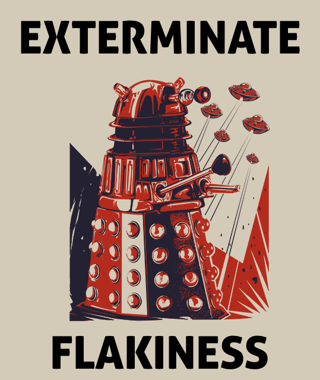

Considerations and Conclusions
with resource list
Reflections
- What worked well? What didn’t?
- Wha patterns did you see?
- Where there any issues or frustrations you commonly ran into?
Testing Principles
- Reliability: If your test is not reliable, then it is not giving you any useful information. It is dead weight.
- Isolation: Think of your test cases like mini science experiments. How do you run a science experiment? You limit your variables.
- Readability: When the test fails, do I know why?
- 1-to-1: A single test should test a single thing. Overloaded tests are often brittle and it’s difficult to get useful information out of them. There is a high cognitive load to sift through all the things being tested to find the one reason the test failed.
Common testing issues
- Brittleness
- Flakiness
- Single change requires updating a lot of tests
- Tests require a lot of setup/state
Brittleness
A test may be said to be brittle when you have to make a lot of updates or frequent updates even when making small changes to the code under test.
Brittleness can mean that you are not properly abstracting your tests or that you are testing too many implementation details.
Brittleness
For example, if you are testing a webpage, do you necessarily need to test that all the right CSS classses were added to an element? Or is it sufficient to test that the right DOM elements exist and are visible?
If you are testing a function, do you necessarily care which helper functions it calls, or is it sufficient that you get the right result or side-effect?
Maybe you do care about the details. But you should expect that this will result in a test suite that requires more care.
Test Story
I was once at a TX JS conference, during which a developer from Stripe discussed how they had componentized their UI styles. This was a major re-work, but it cut down their CSS definitions considerably. More importantly, it created a unified look-and-feel across their app and made it easier to override certain styles for white-labelling.
The way they tested new widgets was to check that those widgets used certain classes. Although this would generally be considered an approach to avoid, Stripe used it successfully to ensure that widgets were using the new, componentized style library.
Brittleness
Some testing approaches or frameworks have a certain degree of inherent brittleness in them. This is especially true for end-to-end tests or tests that have to touch multiple systems.
That does not mean that these tests should be avoided— many times they provide valuable information about the overall health of a system— but you should understand that they come at a price. You should be able to weigh the benefits and costs of these approaches and frameworks.
One of the other costs of end-to-end or multi-system tests is flakiness.
Side note on Selenium
Selenium can be a powerful testing tool, but browsers are a crazy place full of events and asynchronicity.
There is a whole set of best practices for Selenium that we won’t get into here, but one common and avoidable issue that crops up in Selenium test suites is improper abstraction.
Separating page objects that handle interactions with the actual DOM elements from the main test cases will go a long way to more maintainable Selenium suites.
(The other common issue is not waiting for elements to be visible, clickable, or interactable before trying to view, click, or interact with them. Remember: you’re in a browser, and it’s a jungle out there.)
Flakiness
A test may be said to be flakey when it fails randomly (rando-fails) or needs to be re-run another time or two for it to pass.
Flakey tests are a common reason developers dislike or distrust testing. This is especially true when the the test sometimes fails even though no remotely related code has been changed.
Flakey tests are a Big Deal. Nip them in the bud.
Common reasons for flakiness
Left-over State
One test case leaves behind state that messes up other tests (or which other tests inadvertently rely on). One indicator: if a test passes when run by itself, but fails when run as part of the test file or suite (or vice-versa).
The Fix: Figure out which test is leaving behind state and update it to clean up what it created in the test.
Many testing libraries allow you to specify afterEach and afterAll functions, where you can do any kind of cleanup you need to do. These are also called tear down functions. This is the ideal place to do this cleanup because if a test fails or is interrupted, it may not clean its state.
Common reasons for flakiness
Relying on outside systems
Any time you have to call out to a system that is not part of the test suite (especially if it is over the wire), you are opening yourself up to a certain level of flakiness (depending on the system and your approach).
You have now coupled your test to that other system, and if it’s having issues or the internet is bad or the planets are misaligned, you will have a failing test and (probably) a failing build.
Common reasons for flakiness
Relying on outside systems
The first question you should ask yourself is if you even need the test you are writing.
For example, I once ran into a test that was checking if a service class could connect to AWS. Because the service class was using AWS’s library, they were essentially testing if the AWS client jar worked.
Common reasons for flakiness
Relying on outside systems
Otherwise, the most common approach is to mock the service or system that the code under test will be hitting. (And you may want to have both mocked and unmocked tests for a connected service.)
This means, of course, you will have to have written your code in a way that allows for this level of abstraction (e.g. a class takes in a connection as input to its constructor instead of building the connection itself); or you will need the ability to override the connection information at some level of the test suite.
The benefits:
- You have total control over what gets returned so you can be precise in your testing.
- You are no longer relying on another system! High five!
Common reasons for flakiness
Relying on outside systems
Sometimes you want to (or have to) hit the real deal. One way to minimize the amount of flakiness is to have an instance of that system or service on the box that is running the tests (e.g. local instance or instance on a remote test box).
This avoids a whole class of connectivity issues.
This approach is common with tests that touch databases.
Another potential approach to databases is to use something like h2, which creates a database in memory to run the test suite against. Naturally, there are pros and cons to this approach. Test suites of this nature often take much longer to run and the test box will need to be beefier. It is also possible (probable?) that you will not catch database-specific bugs (oh, MySQL).
Common reasons for flakiness
Rounding / Deltas
There are occassions where a successful result is anything within a certain acceptable range (e.g. latitude and longitude coordinates, fuzzy numerical calculations, timestamps).
In these cases, you may will probably see random test failures
because the original test is looking for a specific value.
Some testing libraries have helper functions to check if a value exists in a given range (you can also grab helper libraries like Hamcrest). If you don’t have that out of the box, inbd: you can roll your own with greater than and less than checks.
Common reasons for flakiness
Rounding / Deltas: Example*
var actualCoordiates = mapMaker.giveMeCoordinates(testInput);
expect(actualCoordinates.latitude).toBeGreaterThanOrEqualTo(30.26629999);
expect(actualCoordinates.latitude).toBeLessThanOrEqualTo(30.26639999);
var actualCreatedTimestamp = shazzam.makeMeAnObject();
expect(actualCreatedTimestamp).toBeGreaterThanOrEqualTo(aMinuteAgo);
expect(actualCreatedTimestamp).toBeLessThanOrEqualTo(now);
* This is definitely pseudocode.
Some jargon
You may hear the term syntactic sugar.
If you’re like me and this phrase made no sense to you the first time you heard it: syntactic sugar refers to all the nice helper functionality that makes your tests easier to write and read.
E.g., Hamcrest is a library you can use to sprinkle some syntactic sugar on your JUnit tests.
Less common reasons for flakiness
When it is actually a race condition
Sometimes a flakey test is telling you something useful about the code under test. It is possible that it has a race condition in it.
You shouldn’t start with that assumption, but it’s a possibility.
These are nasty to track down and not always easy to fix, so if this ends up being your issue, we wish you the best of luck.
Less common reasons for flakiness
Non-determinism in tests
Any time you have randomness or non-determinism in your test suite, you are opening yourself up to flakiness.
For most purposes, a set of well-chosen test data will cover all necessary cases, and there is no need for random data.
Not-so-common reasons for flakiness
Non-determinism in code under test
There are very rare occassions where you are trying to test something that is inherently non-deterministic (e.g. a machine learning algorithm).
On these very rare occassions, you might consider other approaches to testing. For example: running the test multiple times, aggregating the results, and looking for a value in a certain range.
It is also very possible that these algorithms might need a human being to look at the results.
A single change requires a lot of test updates
This is usually a sign of poor test isolation or too many tests.
Ideally, each test should test one thing.
The best thing you can do in this case is to take an inventory of the test cases you have had to change and see if there are ways of paring them down.
In your everyday development cycle, when you are updating and especially if you are removing functionality, see if there are any test cases that no longer make sense given your changes. Regular test pruning is good for the overall health of your test suite.
A single change requires many updates to test setup
You might consider abstracting the setup out into a beforeEach or beforeAll call. These are also called setup functions.
This is common with creating objects that require many dependencies.
Example of using beforeEach
var myObj;
beforeEach(function() {
var dependency1 = theWayToGetDep1();
var dependency2 = theWayToGetDep2();
...
myObj = new MyClass(dependency1, dependency2, ...);
});
it('should do something', function() {
expect(myObj.whatever()).toBe(something);
});
* This is also definitely pseudocode.
Tests need a lot of setup
The other depressingly common reason why tests might need a lot of setup is that they were written in a way unfriendly to testing.
This can be indicative of other problems, but the best way to avoid this issue is to write the tests before the code.
For example, I once worked in an Angular code base where almost all of the business logic was embedded in the controllers. That meant that even if you wanted to test a small function, you needed to set up a full instance of the controller with all of its dependencies and requisite state. The task was so burdensome (and in some cases downright impossible) that 90% of that code base was never covered by automated tests.
Heavy controllers is an anti-pattern.
Best Practices
- Use descriptive test names
- Isolate state
- Use appropriate abstractions
- Use set up and tear down functions when appropriate.
- Ignore implementation details if you can
- Mock connected services when possible
- Write your tests first to ensure code testability